展开章节目录
- 开场讲解：原始版、异步改进版与 cuRobo v2 适配版
- 原始同步基线到异步改进版：代码结构详解
- 按流程定位并行方式与接口变动
- 先看代码区别：三种保存方式，共用同一生成任务
- 并发与并行的实现层次：协程调度、GPU 数据并行与保存进程
- 串行与并行版本的变化原理
- 实现细节：从 episode 内存到最终 HDF5
- cuRobo v2 的实现适配：不是只换一个版本号
- cuRobo v2 已补跑：生产完成，严格末态验收 15/16
- 内部耗时变化：按三种计时范围分别看
- 结论：异步保存已经带来收益，v2 已补齐一次完整运行
- 改了什么：把保存从生成主流程中拆出
- 为什么提速：主流程等待减少，而不是规划器突然更快
- 统一口径：最终文件可用，才算生产完成
- 资源利用率：有所提高，但“GPU 跑满”不是验收条件
- 质量效果：本轮指标没有下降，但不代表全面质量认证
- 早期测试：收益方向一致，不能拼成连续加速曲线
- 尚未落地的压缩改动与旧 v2 中断记录
- 下一步如何把结论变成稳定生产配置
- 证据与复现
AutoData 生产效率改进复盘
图册 v011 已按实验论证顺序重新编排：前 30 页为主线，后 6 页为补充材料。新增实验问题、实验矩阵、指标口径、证据链、v2 补跑设计、结论与下一轮验证共 7 页；每页增加读图讲解。本版进一步新增四页代码结构说明。完整逐页说明见 charts-guide.md，演示阅读入口见 charts.html。
本版为全部 36 页图表添加底部简注：“当前实验／依据”交代条件与证据，“支持结论”说明结果能支持什么及其边界。机制图标明源码依据，不将原理说明写成实测证明。
材料截止：2026-10-15（北京时间）。分析对象：2026-10-14 保存的 OpenArm 左臂 AutoData 测试记录。历史 v1 数据复核 JSON、CSV 与遥测；v003 新增 v2 GPU 重跑及最终 HDF5 读回，本版补充 协程并发、GPU 数据并行与 CPU 多进程保存的原理图解及术语定义，详见新实验章节。
开场讲解：原始版、异步改进版与 cuRobo v2 适配版
这里的“原始版”专指本报告中的 cuRobo v1 + 同步保存基线，不是未经修改的上游最初版本。“改进版”指 cuRobo v1 + 异步保存池；“cuRobo v2 版”指 v2 规划适配器 + 已有异步保存池。这三个名称描述当前测试实现，不能理解为三个独立的官方软件发行版。
第一页：三版到底改了什么
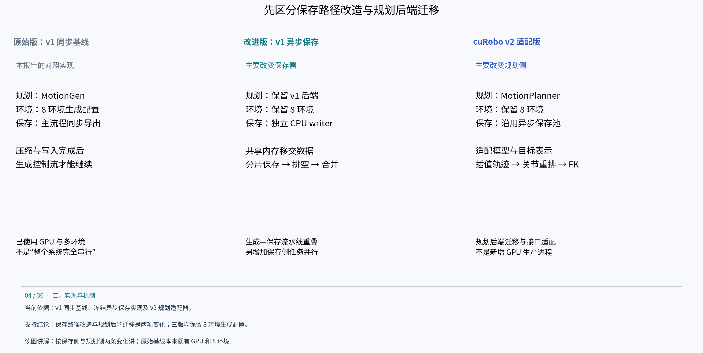
三版本实现边界三版都在相同任务定义下生成机器人操作数据，生产配置均为 8 个环境。第一个变化发生在保存侧：将压缩和 HDF5 写入从生成主进程移到 CPU 写入进程；第二个变化发生在规划侧：将 v1 的 MotionGen 接口适配为 v2 的 MotionPlanner，并处理模型配置、坐标系和轨迹格式。因此，异步保存改进与规划后端迁移是两项不同的实现变化。
讲解要点：原始版已经使用 GPU 和多环境生成。异步改进增加的是 CPU 保存侧的任务并行与生成—保存重叠。v2 版在已有保存机制上替换规划后端，不能把它称为“进一步增加 GPU 并行进程”。
第二页：从代码调用看数据如何流动
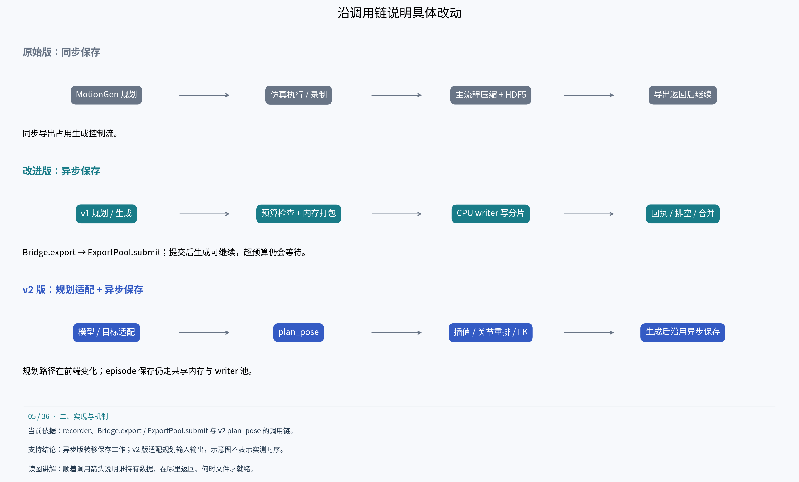
三版本控制流对照原始版中，episode 完成后沿 recorder 的同步路径执行压缩和 HDF5 写入，该调用返回前生成控制流受到保存工作阻塞。异步改进版将该入口改为 Bridge.export → ExportPool.submit：先检查共享内存预算并打包数据，再把任务交给 writer；提交完成后主流程可以继续。后台 writer 写独立分片，回执到达后主进程释放共享内存；整轮结束仍要等待全部保存与合并。以上调用链是源码摘要，不是可直接运行的伪补丁。
v2 版保留异步保存链，主要改动出现在 episode 生成过程中的规划调用：模型字段 ee_link → tool_frames、retract_config → default_joint_position；目标与动态物体转换到机器人基座系；调用 MotionPlanner.plan_pose；通过 get_interpolated_plan 取得执行采样，再按关节名称重排、经正向运动学转换为末端位姿。持物和接触阶段还需要附着、临时碰撞配置及恢复；它不是只改一个 import。
讲解要点：第一处改动缩短主流程承担保存工作的区间，但没有消除压缩计算；第二处改动接入新的规划接口与轨迹表示，其速度和末态质量必须重新测量。两者都保留结束时的输出校验要求。
第三页：实验能支持什么结论
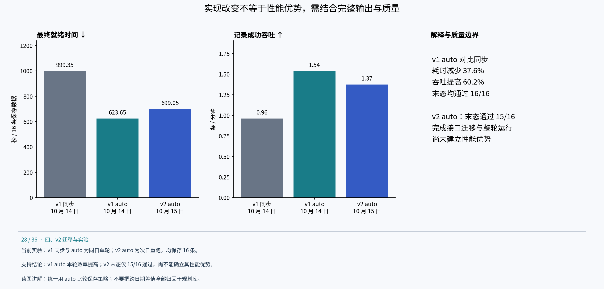
三版本实验结果与结论边界为便于讲解，下面选 v1 auto 作为“异步改进版”的代表，使它与 v2 auto 保持相同的保存策略；没有选择本轮更快的 cap8 来混合比较。固定上限 4/8 的完整结果仍保留在后文。
v1 auto 相比同步基线，最终就绪耗时减少约 37.6%，记录成功吞吐提高约 60.2%，本轮已测末态通过率保持 16/16。这支持“异步保存整体实现改善了本轮生产效率”，不能将收益精确归因于某一个内部改动。
v2 auto 已完成整轮生成、合并和文件读回，但本轮没有表现出更高吞吐，并有一条数据未通过角速度末态检查。v1/v2 为跨日期单轮比较，缓存、热身和系统状态未控制一致，因此既不能宣称 v2 提速，也不能据此断定 v2 后端普遍更慢。原始版与改进版的 17 个完成样本包含失败，v2 阶段均值使用 16 个完成样本；同步导出与异步入队也有不同工作范围，不能把表中阶段差值作为纯写盘速度或纯规划器速度的因果估计。
讲解要点：当前已观察到的生产效率收益主要来自 v1 保存路径改造；v2 的成果是完成接口迁移与一次端到端运行，性能优势和全量末态质量仍未建立。
原始同步基线到异步改进版：代码结构详解
本章只比较 cuRobo v1 下的同步保存基线与异步保存实现。它们共用规划后端、生成任务及 8 环境配置。这里的“新增／替换”指异步分支相对同步分支的运行时结构变化，不是由两个完整 Git 提交计算出的历史 diff。原始 recorder 依据当前本地 IsaacLab 源码，改进实现依据实验目录冻结的 v1 launcher；逐字历史同源性没有额外证明。摘录、路径、行号及哈希见 code-structure-evidence.md。
1. 模块职责怎样拆分
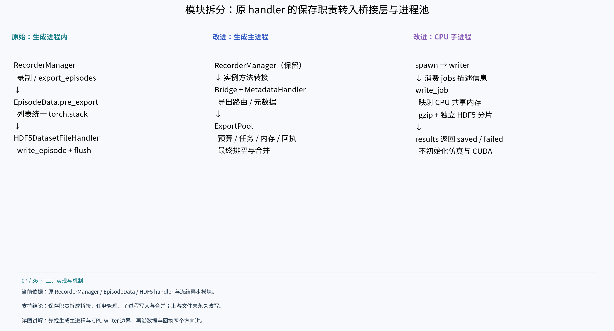
模块职责和进程边界原始保存链由 RecorderManager 协调，EpisodeData 管理每环境缓冲，HDF5DatasetFileHandler 在生成进程中写文件。改进后，recorder 继续管理录制与 episode，但“导出路由与元数据”“内存移交与任务状态”“实际压缩写入”“最终合并”由不同组件承担。
规划、环境任务调度和主循环组织仍由原 AutoData 代码负责。没有将每个环境改造成一个操作系统进程；新增进程集中在 CPU 保存侧。
2. 启动时在哪里接入：源码注入、类方法替换、实例绑定
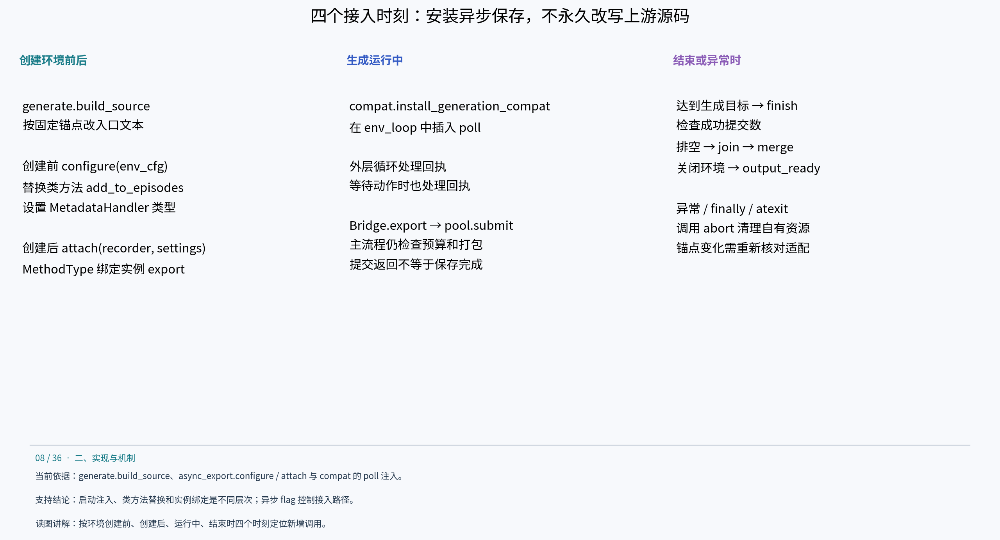
异步分支安装顺序generate.py 读取原 scripts/generate_dataset.py 文本，build_source 按固定字符串锚点插入代码，然后编译执行生成的入口。每个锚点都要求出现一次；上游代码变化会触发断言，而不是自动理解新结构。这是运行时集成 overlay，不是永久改写上游源码。
以下为控制顺序摘要，省略日志和部分参数，不是可直接应用的补丁：
# 控制顺序摘要；settings 与 export_workers 来自 launcher 配置。
install() # 公共路径：安装任务兼容和遥测
if export_workers:
configure(env_cfg) # 环境创建前：替换录制方法与 handler 类型
env = gym.make(env_name, cfg=env_cfg).unwrapped
if export_workers:
attach(env.recorder_manager, settings) # 创建后：绑定实例导出方法
# workers=0 不进入两个条件分支，沿原 recorder 保存路径执行。
实际绑定语句是 attach(env.recorder_manager, settings)。configure 修改 RecorderManager.add_to_episodes 类方法，并将 env_cfg.recorders.dataset_file_handler_class_type 设为 MetadataHandler；attach 创建 Bridge，然后针对这个 recorder 实例绑定导出方法：
recorder.export_episodes = MethodType(
lambda instance, *a, **k: self.export(*a, **k), recorder
)
因此只有配置 flag 打开时才安装异步保存链；但录制方法的替换作用于当前进程中的 RecorderManager 类。owned_recording_method 用标记避免重复包装。MetadataHandler 的 close 是空操作，因为真正的 HDF5 由 writer 关闭；它不是对所有文件 handler API 的通用完整实现。
compat.py 在外层迭代和等待动作的循环中调用 poll，既处理保存成功回执，也尽早发现 writer 失败。生成达到目标后，launcher 先 finish(expected_successes=生成成功数)，再沿原结束路径关闭环境；output_ready 在 env.close 之后记录。异常路径和 atexit 则调用 abort。
3. 原始调用链与改进调用链逐步对照
原始同步路径如下（当前 recorder 源码摘要）：
# RecorderManager.export_episodes
self._episodes[env_id].pre_export() # 递归 torch.stack，各列表转成 tensor
handler.write_episode(episode, demo_id, dataset_compression)
# handler 内：value.cpu().numpy() → h5py.create_dataset(...)
# 默认开启压缩时 gzip level 2
self._episodes[env_id] = EpisodeData()
# 本次 export 的写入完成后 flush handler
改进后的 Bridge.export 保留空数据判断、导出模式、成功/失败输出路由、seed/success 属性及可选 demo_ids，但不调用原 pre_export 或原 write_episode：
# Bridge.export 摘要：提交原始 episode.data，允许逐帧打包后释放源数据。
self.pool.submit(
episode.data, output=handler.path,
env_args=dict(handler._env_args), attributes=attrs,
compression=recorder.cfg.dataset_compression,
demo_id=chosen_demo_id, env_id=env_id,
format_version=self.format_version, release_source=True,
)
episode.data.clear()
recorder._episodes[env_id] = self.episode_class()
chosen_demo_id 是讲解用变量，真实代码按 demo_ids 是否提供选择 ID。submit 返回的是 demo 索引，Bridge.export 没有将其返回为完成凭证。两者都为普通函数；异步来自后台进程，不来自 async def。submit 返回前仍可能等待预算并执行 CPU 打包。
原 recorder 在完成导出处理后更新 episode 计数；Bridge 将已保存计数更新放在 saved 回执处理后，并用 saved_seen 防止重复计数。MetadataHandler.demo_count 主要服务默认 ID 的索引进展，不是“最终文件已存在”的证明。任务生成成功数、已提交数、已保存数与末态合格数必须分别理解。
4. 内存路径为什么需要改：切片所有权与整条堆叠
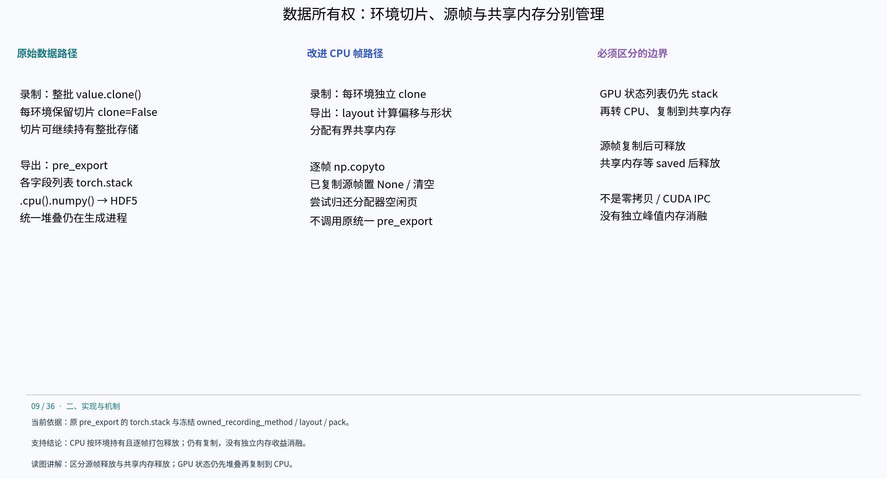
数据所有权改动对照原 add_to_episodes 先 clone 一份包含所有环境的 tensor，再把 value[value_index] 以 clone=False 放入 EpisodeData。切片可以继续持有底层整批存储；即使部分环境结束，只要其他切片仍在使用，共用的存储就不能回收。改进逻辑如下，循环与字典处理省略：
# 原始：批量 clone 后保留每环境切片。
value = value.clone()
episode.add(key, value[value_index], clone=False)
# 改进：CPU 按环境独立持有；GPU 仍保留原批量 clone 路径。
cpu_owned = value.device.type == 'cpu'
if not cpu_owned:
value = value.clone()
episode.add(key, value[value_index], clone=cpu_owned)
第二个改动发生在导出时。原 pre_export 对所有叶子列表 torch.stack；改进 layout 先确定嵌套字段的 path、shape、dtype、offset 和 bytes，将偏移按 64 字节对齐，再分配共享内存。CPU 列表按帧复制到目标缓冲，release_source=True 时把已复制源帧替换为 None，累计释放约 64 MiB 时尝试 malloc_trim，末尾清空列表。它降低源帧与额外整条堆叠副本同时存在的需求，但仍存在复制开销，没有测得独立峰值内存收益的消融结果。
GPU 状态列表采用 torch.stack(value).detach().cpu().numpy() 后一次复制到共享内存，目的是减少逐帧设备到主机转换。不是所有字段都逐帧复制，也不是 CUDA IPC：writer 收到的是 CPU 共享内存。该路径没有消除设备到主机的数据传输或同步成本。
5. 新增任务协议与父子进程状态
submit 先检查单条 size ≤ limit，再在 used+size 超预算时 poll(wait=.05)；之后分配内存、pack、再 poll、登记 pending 与 entries、jobs.put、按需扩容。检查顺序很重要：打包期间完成的保存任务可以在第二次 poll 中被回收，已有 writer 也可能再次消费任务。
writer 通过 jobs.get 取任务；write_job 按 worker PID 与 route 打开独立 HDF5 文件。数据先写入 _pending_<id> 组，成功后移动到 /data/demo_<id>，更新 total 并 flush，然后发送 saved。这里的组移动与 flush 是分片内部完成步骤，不是“最终输出已经合并”。gzip level 2 与原路径保持一致，h5py 仍自动选择 chunk；未在这组改造中启用离线实验中的 lzf。
6. 正常完成、失败退出和最终文件的语义
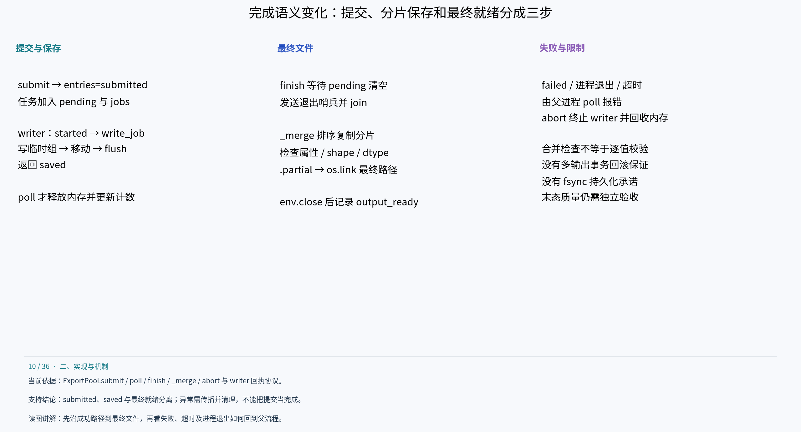
任务完成与失败分支_merge 的检查不是逐值比较，也不是物理质量验收；保存后还需独立 validate_output。os.link 拒绝覆盖已有文件，单次文件名发布具有对应的原子语义，但没有跨多个输出 route 的事务回滚保证，也不能等同于 fsync 持久化保证。清理时保留的分片与 manifest 不是已实现的自动恢复机制。
poll 的单任务超时使用 writing_started（已收到 started 时）或 submitted_at（尚未开始写入时）作为参考；因此应分别理解排队期间与写入期间的等待。主循环通过 poll 发现异常，finish 自身失败时会 abort，launcher finally / atexit 作为退出清理路径。不能把“后台执行”理解为后台失败不会影响主任务。
7. 改动与实验指标怎样对应
讲解顺序建议：先讲模块拆分，再讲安装点和方法替换，然后沿一条 episode 跟踪内存、任务、文件和回执，最后用计时结果解释收益与代价。结论仍是本轮异步整体实现改善效率，而非已证明某个单函数贡献了全部加速。
按流程定位并行方式与接口变动
本节区分三种证据：实验冻结 launcher、2026-10-15 当前 AutoData 源码、官方库文档。v2 实验记录的 cuRobo commit 为 78fd485fa82d9b9a063fb4985e371814587e666a；官方 latest 文档用于解释库能力，不作为该固定提交所有接口行为的替代依据。当前 v1 主代码不构成历史实验源码逐字相同的证明。接口证据摘录、行号和哈希另存于 interface-evidence.md。
各阶段在哪里执行，采用哪种并行方式
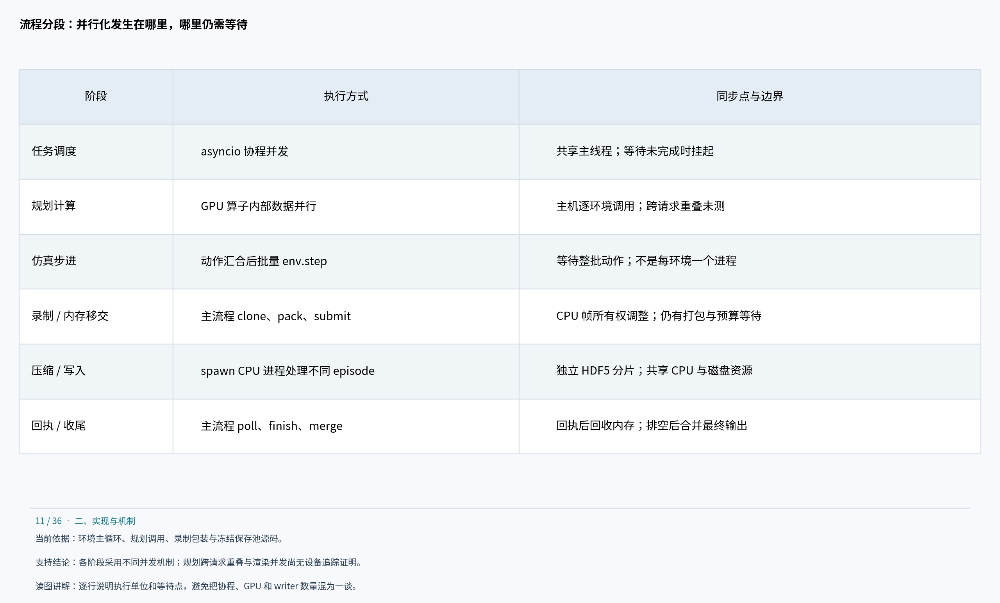
逐阶段并发与并行方式渲染由仿真运行时管理，GPU 参与其中；本次没有单独的渲染 stream、渲染进程或 kernel 时间线证据，不将它描述为与规划必然同时执行。三版沿用 8 环境生成配置；保存侧并行化没有改变规划请求的组织方式。
保存接口：调用入口兼容，完成语义改变
这些是本项目保存层接口变化，不属于 cuRobo v1/v2 的公开 API 变化。异步保存是后台进程机制，Bridge.export 和 ExportPool.submit 自身仍是普通函数，并非 async def，也没有把磁盘写入改为操作系统异步 I/O API。
规划接口：保留上层契约，替换库调用与数据类型
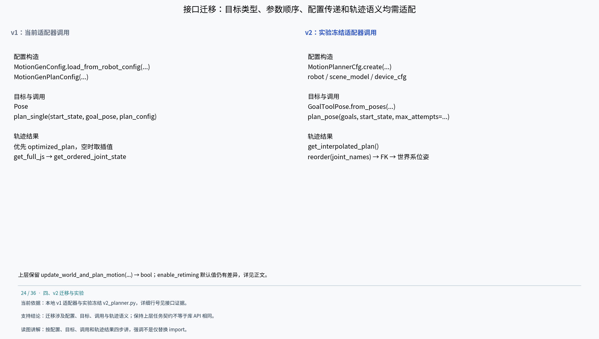
规划接口迁移对照AutoData 上层仍调用 update_world_and_plan_motion，传入 target_pose、expected_attached_object、env_id、step_size 和 enable_retiming，并接收 bool；随后通过 get_planned_poses 获取末端位姿列表。这是适配层维持的任务契约，不是 cuRobo 官方方法。当前 v1 的 enable_retiming 默认值为 None，冻结 v2 的默认值为 False，不能描述为完整函数签名逐字相同。
v1 的 MotionGenPlanConfig 还含 enable_graph、enable_graph_attempt、enable_finetune_trajopt 和 time_dilation_factor。v2 适配器在配置层禁用 graph_planner，并在禁用 finetune 时包装 trajopt_solver.solve_pose、强制 finetune_attempts=0。它不是将整个 MotionGenPlanConfig 原样传给 plan_pose。当前摘录没有为 enable_graph_attempt 和 time_dilation_factor 建立直接一对一映射，不能据字段近似宣称求解策略完全一致。
v2 适配器还导入 curobo._src.types.robot.RobotCfg 与 curobo._src.util.usd_scene_parser.UsdSceneParser。它们在固定版本中没有公开导出，因此存在私有接口依赖；升级库版本后必须重新核对，不能将该适配代码当作跨版本稳定接口规范。
cuRobo v1 与 v2：库的变化与本项目使用范围
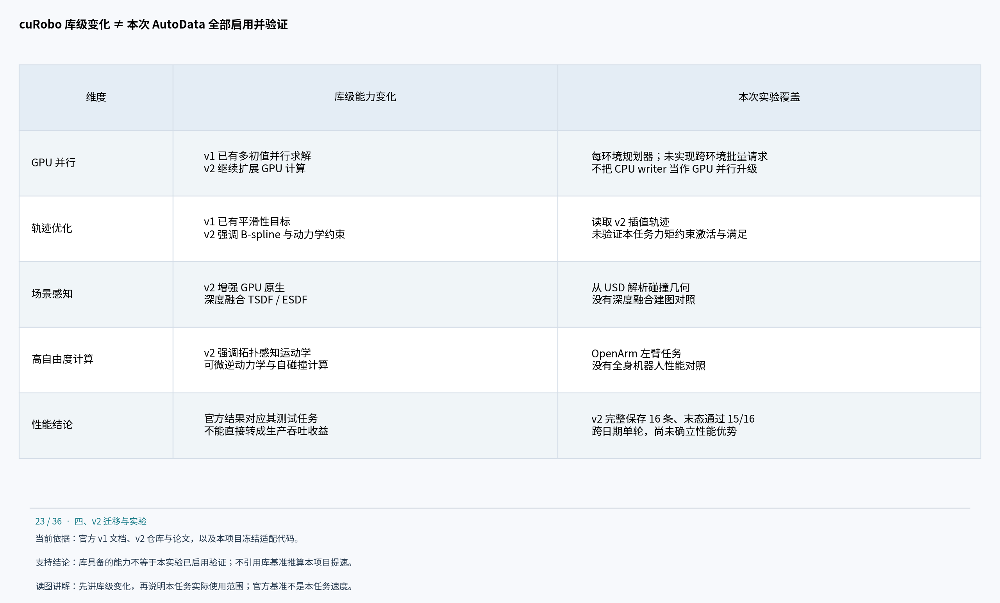
库能力与本次实验覆盖范围“v1”在这里指旧一代 API，不是名为 1.0 的包版本；官方仓库将 v0.7.8 标为保留 v1 API 的标签，并说明 v2 是公开 API 有变化的较大重写。本实验固定提交，不因在线文档更新而自动改变。官方仓库说明
以上库级能力来自旧版官方概述、v2 官方仓库及v2 论文。接口文档参见v1 MotionGen与v2 MotionPlanner。论文中的专用基准收益不作为本项目生产吞吐的估计。
本项目能确认的是保存链路改造、v2 适配实现与已记录的端到端结果。不能从“库支持多环境／动力学／感知”推出“本次全部启用并验证”，也不能从 v2 库级改进推出此任务必然更快。当前仍保留 v2 末态检查 15/16 的结果和跨日期单轮比较限制。
先看代码区别：三种保存方式，共用同一生成任务
本节依据本轮测试目录中冻结的 launcher 源码，而非后来可能变动的工作区代码。示意代码经过简化，用于解释控制流；不是可直接执行的补丁。cuRobo v1 的同步、上限 4、上限 8、auto 共用任务与规划后端，差别集中在导出路径与 writer 扩容策略。
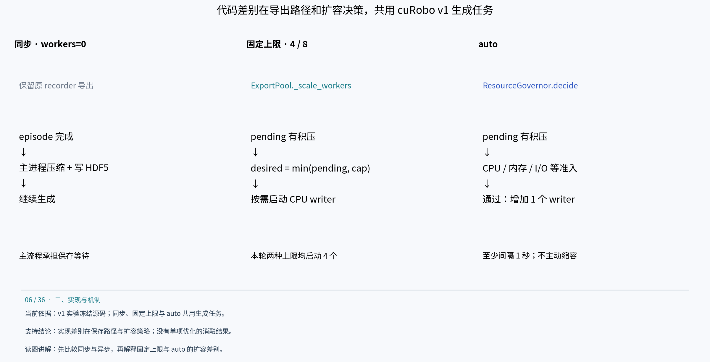
三种方法的代码分支异步模式共有的四项代码调整如下，固定上限和 auto 都使用它们：
1. CPU 帧按环境独立持有。 async_export.py:37–60 将 CPU batch 的切片改为每个环境独立 clone，避免保留整批其他环境数据；GPU 分支仍保留原有批量 clone。它解决内存生命周期问题，不是“零拷贝”。
2. 数据移交改为有界共享内存。 Bridge.export 调用 pool.submit(..., release_source=True)；submit 先等待预算，再 pack，共享内存仅传名字和布局给 writer，复制后释放源数据。队列背压仍可能阻塞主流程。
3. 保存转入 CPU 子进程。 writer 写各自分片，回执确认后回收共享内存；HDF5 句柄和仿真对象不跨进程传递。并发改变调度位置，没有消除压缩计算。
4. 增加完成屏障和合并校验。 finish 等待全部 pending 清空、等待 writer 退出，_merge 复制各分片到临时 HDF5、检查属性/shape/dtype/压缩方式，再发布最终文件。output_ready 在后续 env.close 后发出，所以收尾区间略大于 drain+merge。
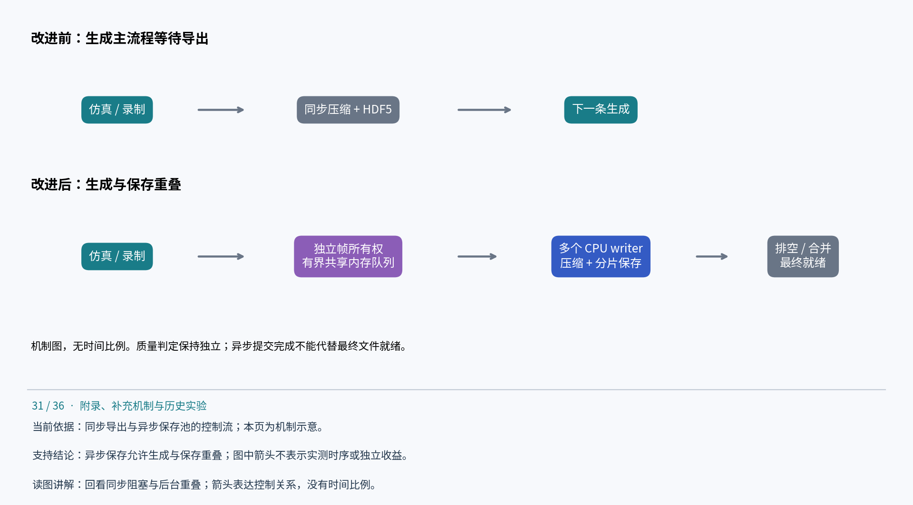
数据所有权和保存重叠示意这些优化没有在本组中改用 lzf、降低图像分辨率或取消质量检查。auto 额外优化的是资源准入，而不是新增一种压缩算法。内存修复、异步保存与分片合并没有分别做消融测试，不能把整批提速精确拆成每一项改动的独立贡献。
并发与并行的实现层次：协程调度、GPU 数据并行与保存进程
当前实现可以概括为：一个生成主进程通过单线程 asyncio 事件循环调度 8 个环境任务，并维护各环境的规划器实例；仿真、渲染及规划中的设备计算由 GPU 执行；独立 CPU 写入进程负责压缩与分片保存。 8 个环境、4 个 writer、规划器内部的候选解数量，是三个不同维度，不能相乘当作生产加速倍数。
本报告按执行层次使用以下术语。“并发”表示多个任务在重叠的时间区间内取得进展；“并行”表示多个执行单元在同一时刻执行工作。并发不必然意味着同时执行。
本节主循环依据 2026-10-15 本地 AutoData 源码检查；保存池依据实验冻结源码。主循环并非新增的历史实验快照，不能仅凭当前代码断定每个历史提交细节完全相同。以下三张图均为机制示意，不是 GPU profiler 实测时间线；本版未新增实验数据。
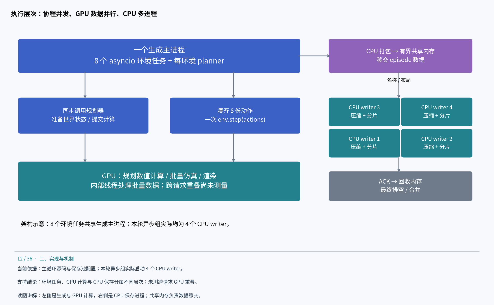
GPU 与 CPU 进程的实际分工1. 同进程协程与批量仿真：8 个环境如何一起推进
setup_async_generation 对每个 env_id 创建 asyncio task，任务共享生成器和仿真对象。协程在 await 的操作尚未完成、需要挂起时让出事件循环线程；若该操作已经完成，await 不一定导致任务切换。普通同步 Python 函数调用没有为该事件循环提供协程调度点。它不是启动 8 个操作系统进程，也不保证 8 次规划调用同时执行。
具体到一步动作，MultiWaypoint.execute 将 (env_id, action) 放入队列，随后 await queue.join()。env_loop 等到队列长度达到 env.num_envs，取出整批动作，按 env_id 填入 actions，再调用一次 env.step(actions)。env.step 返回后，对本批取出的队列项逐一调用 task_done；队列未完成任务计数降到零时，queue.join 的等待者才可继续。task_done 是队列处理完成的记账操作，不是 CUDA 设备同步调用。因此某个环境暂时没有提交动作，整批就需要等它。这里的 asyncio.gather 用来批量取队列数据，不能据此宣称启动了并行 GPU 规划。
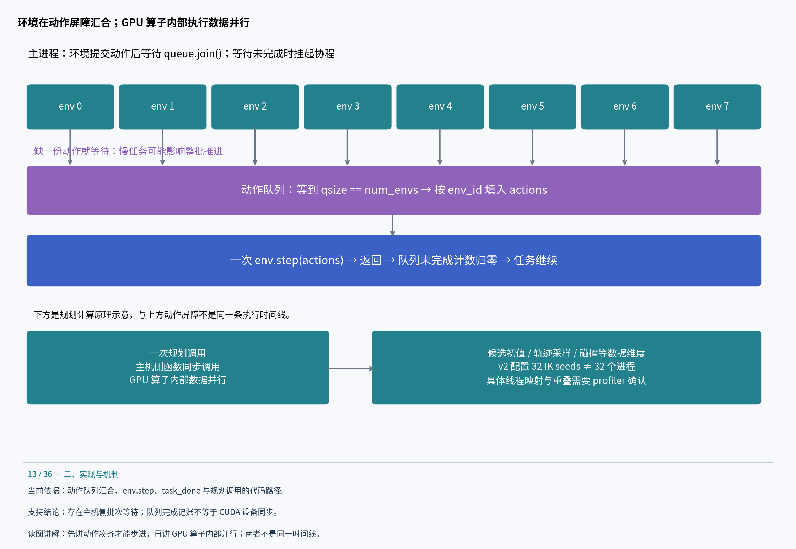
动作汇合屏障与 GPU 内部计算规划调用 planner.update_world_and_plan_motion 在当前 algorithms.py 中是同步调用，没有通过 executor 或独立规划进程提交。每个环境一个 planner 解决各环境世界状态与轨迹的管理问题，不意味着每个环境绑定独立 CUDA stream。这里的“同步调用”描述主机侧函数控制流，不意味着每次调用都会同步等待全部 GPU 工作完成。GPU 上是否发生不同规划请求、仿真与渲染 kernel 的重叠，要结合 CUDA stream 和设备追踪确认，本组日志不足以证明。
2. GPU 算子内部数据并行与跨 kernel 并发执行
GPU 适合将相似数值运算组织为批量数据，由许多线程执行。例如规划可围绕候选初值、轨迹采样点或碰撞计算展开；仿真批次则包含多个环境的状态与动作。这种并行发生在 GPU 运算内部，不需要为每个候选解启动一个 Python 进程。候选数和线程数也不是一一对应关系，具体映射由算子实现决定。
v2 适配器配置 32 个 IK seeds，表示为求解提供多组候选初值；不表示 32 个 writer、32 条独立生产轨迹，亦不保证 32 倍提速。CUDA Graph 通过重放预先构建或捕获的工作依赖图，降低重复提交工作的主机侧开销；本适配器启用了相关配置，实际收益未单独测量。它不能绕过动作汇合屏障，也不把同步 Python 规划调用自动变成跨环境并行。当前证据没有各 kernel 的耗时、占用率或重叠比例，不能据设备利用率反推出这些数值。
3. CPU 多进程：把保存从生成线程移出去
ExportPool 使用 multiprocessing 的 spawn 创建独立 writer。主进程先将 episode 打包到有界共享内存，再向子进程发送共享内存名称和布局。writer 在自己的进程中执行压缩与 HDF5 分片写入，保存完成发送 ACK；主进程收到回执后释放共享内存与预算。不同 writer 可处理不同 episode，单个 writer 内部仍按任务保存。
这些 writer 不初始化仿真或 CUDA。增加 writer 改变的是 CPU 保存能力，并不会增加 GPU 数量或仿真环境数量。收益来自两部分：生成与保存可以重叠；多个保存任务可以并行处理。代价是共享内存打包、通信、CPU / 内存带宽 / 磁盘竞争，以及最终排空和合并。当在途共享内存占用加上待提交数据大小超过字节预算时，主进程需要等待预算释放，因此异步保存不等于没有阻塞。
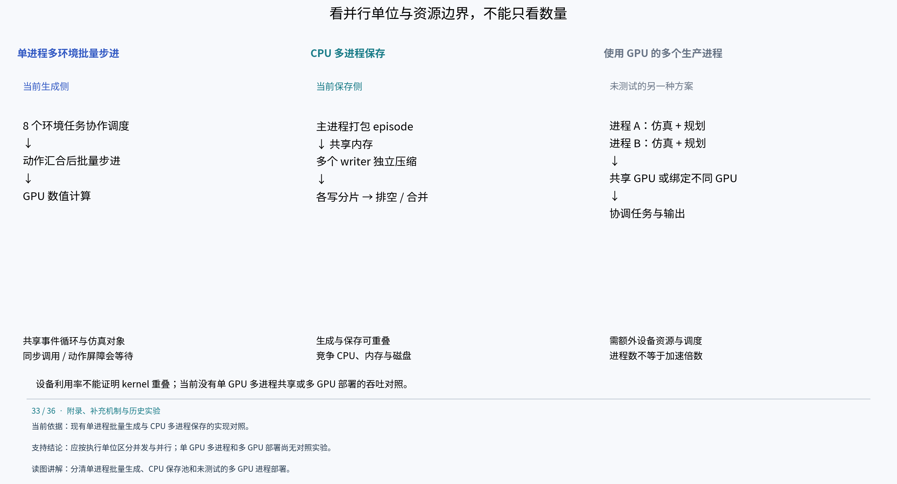
不同实现的资源与等待关系对照4. 单 GPU 多进程共享与多 GPU 任务分配
“GPU 进程”在此应表述为“使用 GPU 的主机进程”。另一个可选架构是多个主机进程分别建立仿真与规划器，再向同一张 GPU 提交工作，即单 GPU 多进程共享。这属于新的实现方案，本报告没有该方案的实测对照。它通常需要额外的模型、世界状态和设备资源；GPU 仍由多个任务共同竞争，进程数不能直接变成吞吐倍数。采用多张 GPU 时，还需要明确进程与设备绑定、任务分配和输出汇总，也属于另外的实验条件。
5. 怎样解释已观察到的效率变化
v1 同步与 cap8 的最终就绪时间为 999.35 秒和 600.82 秒，缩短约 39.9%；吞吐由 0.961 增至 1.598 条 / 分钟，增加约 66.3%。两组都是 8 个环境，cap8 实际只启动 4 个 writer。这组差异支持“改变保存路径后，整批生产效率提高”，不能解释为环境数翻倍或 GPU 计算本身快了 66.3%。
同步保存会占用生成控制流，可能延迟其他环境提交动作，继而影响批次推进。将压缩和写入移出主进程可以减轻这类等待，这也能解释为何改善会体现在 execution_wait，而不只体现在 export。但这只是与代码及阶段计时一致的机制解释，缺少逐次调用追踪，不能精确分配因果贡献。异步仍保留打包、背压、排空和合并，所以并行收益有上限。
若继续验证 GPU 瓶颈，应记录每环境动作就绪时刻、批次等待时间、规划调用开始结束、共享内存预算等待与 writer 队列长度，并加入 CUDA 事件或 profiler 追踪；同时对相同输入、环境数和硬件做重复对照。这样才能区分“GPU 算得慢”“主线程没有及时提交工作”和“保存积压反向阻塞生成”。上述验证尚未执行。
串行与并行版本的变化原理
这里的“串行”和“并行”主要指数据保存方式。此前各组都使用 8 个仿真环境，同步保存基线也采用多环境批量步进，不能称为整个系统完全串行。需要区分三个层次：
各版本究竟改变了什么
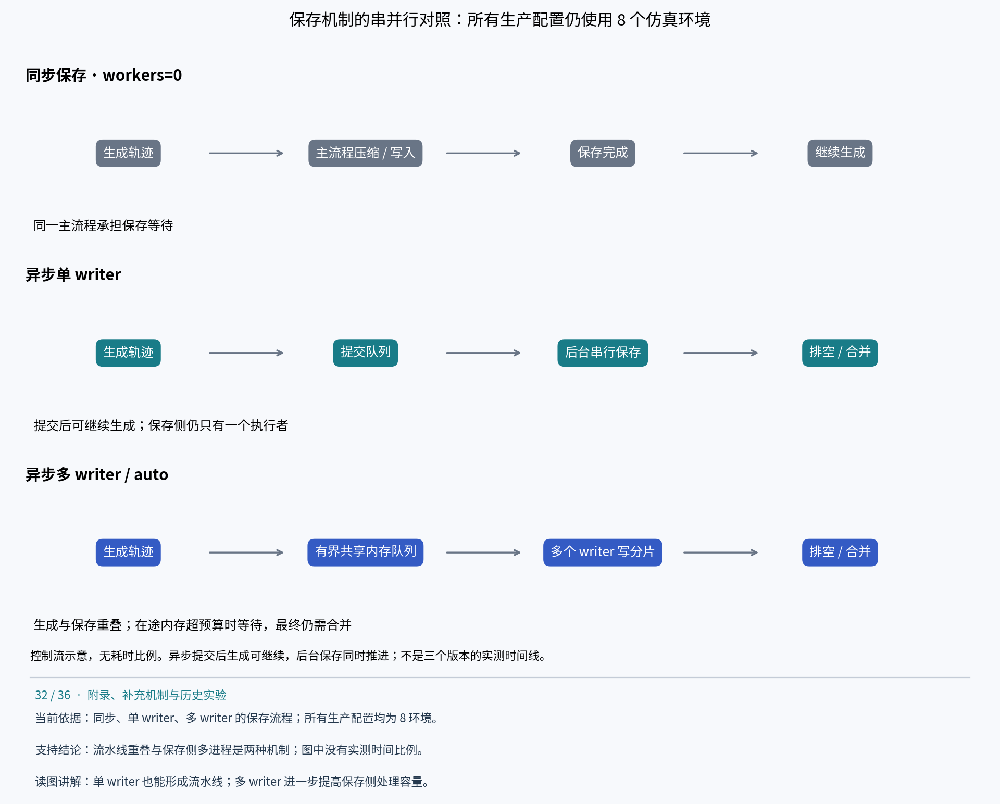
同步保存、单写入进程异步保存和多写入进程异步保存的机制对照加速来自哪里：把相加的工作变成重叠的工作
在理想化的单生产者、单保存阶段模型中，若生成一条需 G、保存一条需 W，同步模式处理 N 条约需 N×(G+W)；异步单 writer 的流水线约需 G+W+(N−1)×max(G,W)。这说明单 writer 也能通过重叠提高完整生产吞吐，但保存侧本身没有变快。
多个 writer 在独立资源充足时可以进一步提高保存侧容量；实际收益还受进程调度、数据打包、内存预算、磁盘吞吐和末尾排空约束。上述公式用于解释机制，不是本次 8 环境系统的拟合公式；不能把并发 episode 的阶段累计值直接代入推算实测墙钟时间。
为什么异步单 writer 不一定让文件更早就绪
离线保存同样 4 条数据时，同步最终就绪为 105.13 秒，异步单 writer 为 105.45 秒，异步双 writer 为 56.66 秒。单 writer 让提交更早返回，但保存工作仍由一个进程串行完成；双 writer 才增加了保存侧并行处理能力。离线实验没有持续生成可供重叠，不能直接作为完整 GPU 生产的加速比。
完整生产中，变化集中在主流程等待
前两行统计每组 17 个已完成 episode，包含 1 次失败；第三行异步配置统计 16 个保存事件；最后一行是整批墙钟时间。这些指标范围不同，不能直接相加。
后台写一条仍需约 27–28 秒，并未变成 2.6 秒。2.6 秒是主流程移交数据的平均负担。保存移到后台后与生成重叠，整批记录成功吞吐相对同步提升约 55%–66%。
“上限 4”和“上限 8”本轮实际都只启动了 4 个 writer，所以不能把它们的差值解释为 8 个保存进程相对 4 个的收益；单轮也不足以确定稳定排名。
为什么增加并行度不会一直加速
多个保存进程会竞争 CPU、内存带宽和磁盘；共享内存队列有字节预算，保存跟不上时仍会触发背压；最后还需等待分片完成并合并。仿真、渲染、规划和调度也可能成为新的瓶颈。
本轮 auto 的生成区间比“上限 8”快约 14 秒，但收尾多约 37 秒，最终晚约 23 秒交付。应优先比较最终合格数据的交付吞吐，GPU 利用率和主流程生成速度只作为辅助指标。
cuRobo v2 是独立的比较维度
10 月 15 日 v2 auto 补跑最终就绪为 699.05 秒、记录成功吞吐 1.373 条/分钟、末态通过 15/16；旧 v1 auto 为 623.65 秒、末态通过 16/16。两次跨日期、缓存状态不同，目前只能作为观测对照，不能证明 v2 升级造成提速或减速，也不能把异步保存收益归到规划器版本升级。
实现细节：从 episode 内存到最终 HDF5
1. 一份数据在谁手里，何时可以释放
录制阶段的 RGB 已在 CPU，少量状态字段仍可能在 GPU。owned_recording_method 让 CPU 帧按环境 clone，避免一个切片保留其他环境的整批缓冲区；它并没有消除复制。GPU 仍用原来的批量 clone 语义。
layout 遍历嵌套数据，记录每个叶子的路径、shape、dtype、offset、bytes；pack 在共享内存中按布局创建 NumPy view。CPU 帧逐帧复制，开启 release_source=True 时释放已复制的源帧，每累计释放约 64 MiB 尝试归还分配器空闲内存。小型 GPU 状态列表先 torch.stack 再一次转 CPU，减少逐帧设备同步。这里的 64 MiB 是尝试 trim 的触发量，不是保证 RSS 立即下降的配额。
writer 只接收共享内存名称与布局元数据，重新构造只读 NumPy view，不接收 CUDA tensor、Isaac Sim 对象或跨进程 HDF5 句柄。writer 完成写入并 flush 后发出 saved 回执；父进程收到回执才 close + unlink 共享内存，并减少 used 预算。这个顺序防止 writer 读取未完成时内存被提前释放。
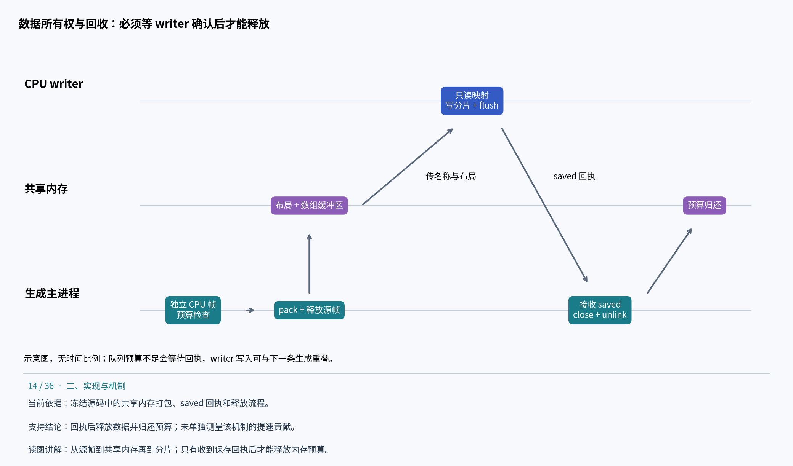
数据所有权与回执回收2. 队列背压控制的是字节，不是 episode 数
提交前要求单条数据不超过队列预算；当 used + size > limit 时，主进程反复 poll(wait=.05)，接收已完成回执释放预算。随后还检查 /dev/shm 可用量，再分配共享内存并打包。它是有界队列，但背压仍会暂停主流程，所以异步入队的 P95 高于典型入队耗时。
本组请求预算 16 GiB。每条同时包含三路 640×480 RGB，不能把“8 个环境”理解成可以无代价地同时保留 8 条完整轨迹。实际占用取决于长度、源帧是否释放、已提交且尚未确认的数据、writer 私有内存与仿真器本身。
3. writer 如何扩容，为什么上限 8 只开了 4 个
固定模式按 min(待完成任务数, 上限) 扩容；这里的待完成包含排队、正在写入和进程启动阶段的任务。打包完成后会先 poll 一次，优先复用已有空闲 writer，再决定是否启动新进程。因此 writer 数由任务到达节奏与保存速度共同决定，配置上限不等于实际并行度。
auto 至少每隔 1 秒重新采样并最多新增 1 个 writer。CPU 容量同时考虑亲和性与 cgroup quota；保留 CPU 核心数为 min(2, 容量×25%)，内存保留量为 max(256 MiB, 容量×15%)，还检查进程槽位、共享内存余量、输出磁盘余量和 I/O pressure。I/O pressure 的 avg10 达到 20% 时拒绝扩容；磁盘余量必须至少容纳一条数据加 1 GiB。资源读取失败也拒绝扩容。
这些检查发生在新增 worker 的准入点，不是持续调整仿真环境数，不会主动缩容，也不是 GPU 利用率控制器。参数是当前冻结代码的规则，不保证在其他机器上最优。
4. 为什么写分片，为什么最终还要等待
每个 writer 按 route 维护自己的分片 HDF5，使用 gzip level 2，chunk 由 h5py 自动选择。单条先写 _pending_<id>，叶子和属性全部完成后移到 /data/demo_<id>，更新帧数并 flush，再回复 saved。独立分片避免多个进程同时写同一个 HDF5 文件。
finish 等待所有回执、发送退出哨兵并 join writer。_merge 按 demo_id 排序，将每条复制到 .partial.hdf5，核对属性、空组、shape、dtype、压缩设置和 episode 数；完成后用拒绝覆盖的硬链接发布最终路径，再移除临时链接。它避免未完成文件提前出现在最终路径，但不等于每个字节都经过独立读回，也不等于 fsync 持久化承诺。
output_ready 在后续 env.close 后记录。因此最终耗时包括生成、排空、合并及关闭等收尾，而 export_saved 只表示分片已写。此次旧 v2 实验正缺少这个最终完成链。
5. 出错时如何处理
writer 发送 failed、意外退出或单条超时会使父流程报错；abort 终止本任务的 writer，回收仍持有的共享内存并将 manifest 记为 failed。分片可能留存便于检查，但当前代码没有自动恢复所有中断状态的通用机制。仅凭 manifest 里的 saved 计数，不能认定对应磁盘文件现在仍存在。
cuRobo v2 的实现适配：不是只换一个版本号
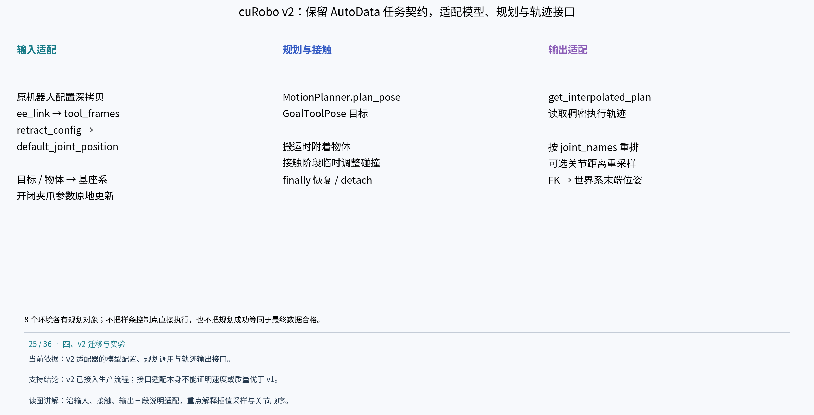
v2 的数据与接口适配该适配器按 env_id 为各环境构造规划对象；代码中的单环境规划调用不等于跨 8 个环境的一次批量规划。8 环境批量仿真与规划器批处理是不同层次，不能仅凭 num_envs 推断 GPU 求解并行度。
另外，v2 的 solver iteration 埋点在旧遥测中不可用。监控行显示“求解 0 次”时，应同时检查 planner_requests、planner_request_success_rate 和 solver_iteration_instrumentation_available；0 不能解释为没有调用规划器。报告将规划请求与内部求解迭代分开，缺失的迭代统计不参与 v1/v2 比较。
cuRobo v2 已补跑：生产完成，严格末态验收 15/16
旧实验的 4 个分片已不在 manifest 指向的位置，无法直接恢复。本次使用保留的 v2 环境、冻结 launcher、同一源 HDF5 和 seed 101 任务配置，在新的本地目录重跑 8 环境、16 条成功目标。没有改上游代码、质量阈值、图像分辨率或压缩算法。
新实验记录了 output_ready，进程正常退出，最终文件存在且可读：生成成功 16/16，保存 16 条，末态检查通过 15/16。校验使用与历史测试相同的 validate_output.py，覆盖动作维度/有限性、图像形状与首尾读取、末态放置/速度检查并计算整个文件 SHA-256。它不是逐帧物理重放，也不是完整图像质量认证。
质量检查整体未通过。 未通过项为 demo_2：物体在目标区域内，高度误差约 0.23 mm，线速度 0.0221 m/s 低于阈值 0.03 m/s，但角速度 0.8538 rad/s 超过 0.5 rad/s 的原阈值。校验器返回码为 1；原生结构检查返回码为 0。没有修改阈值或删除该条数据。应先分析结束判据与稳定等待，再决定是否需要增加静止窗口并另开实验，不能用本轮声称 16 条全部合格。
按已测末态合格条数计算，吞吐为 15×60/699.046 = 1.287 条/分钟；按生成器记录成功条数计算为 1.373 条/分钟。两者均不包含校验器运行时间；如衡量端到端质量验收交付，还需把校验耗时纳入计时。旧 v1 auto 的 16 条均通过末态检查，表中的 1.539 条/分钟在该检查口径下不变。
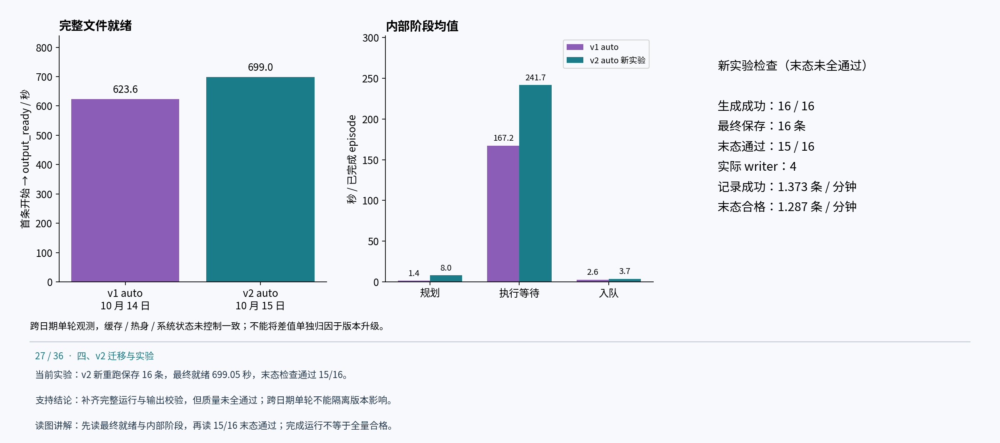
v2 完整结果与内部阶段这张表是跨日期的观测对照，不是隔离版本因素的公平速度排名。 新实验启用了独立缓存目录，首次初始化可能含编译开销；系统负载、CPU 调频与缓存状态未与昨天完全对齐。即使从首条开始计时，延迟初始化仍可能进入生产区间。后续若要确认 v2 的稳定收益，需要同日交错重复 v1/v2，并记录一致的热身策略。
新实验内部阶段的统计分母为 16 个已完成 episode；旧 v1 auto 为 17 个。新实验规划均值 8.038 秒、执行/等待 241.740 秒、入队 3.694 秒；排空 27.228 秒、合并事件阶段 4.134 秒。后台写入均值 28.409 秒/条，仍与主流程重叠，不能直接相加。
原始运行产物保存在当前工作区 workspace-overlays/efficiency-review-runtime/v2-auto-16-seed101/。报告只附指标与校验记录，大型 HDF5 留在该本地目录；文件 SHA-256 为 801cc08322f51e0d38a800fc00445931246d3b25ccd47bc06f657576ccf27bb2。详见本包 v2-result.json 与 v2-validation.json。
内部耗时变化：按三种计时范围分别看
A. 每个 episode 的主流程均值
以下分母为每组 17 个已完成 episode（16 成功 + 1 失败），不是只统计 16 条成功输出。同步导出与异步入队代表不同工作，不能把异步的 export=0 理解为不需要保存。
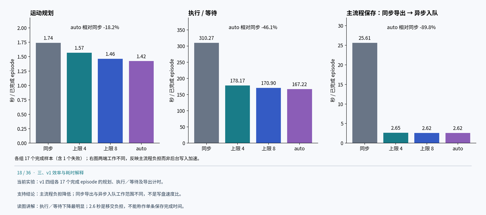
各内部阶段的变化与相对改善执行/等待由 310.274 降至 167.215 秒，下降 46.1%；主流程的同步导出 25.615 秒被约 2.619 秒的异步入队替代，该主流程阶段负担下降约 89.8%。这不是后台保存加速 89.8%：writer 仍需约 27–28 秒写一条数据。
B. 异步移交与后台写入：可以重叠，不能相加为总耗时
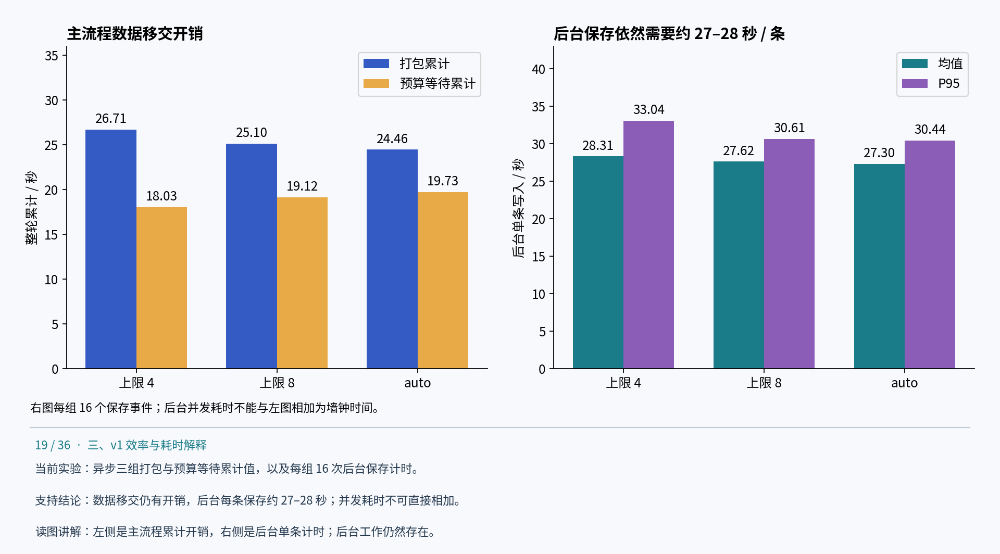
异步打包、背压与后台写入打包、预算等待与主流程入队计时存在包含关系，起止点和样本范围也不完全一致；不应把它们再次加入 episode 阶段总和。后台写入与主流程并发，多 writer 写入的耗时总和也不等于墙钟时长。同步模式没有异步 writer 的同名测量，缺失值不填 0。
C. 整批收尾：auto 本轮生成最快，却没有最早交付
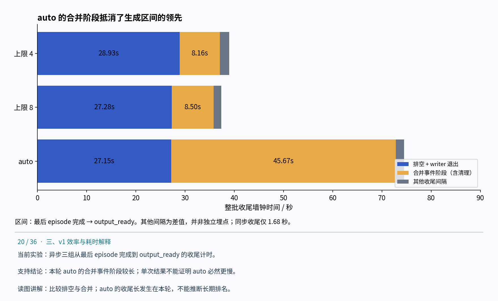
收尾阶段细分auto 的生成区间比上限 8 短约 14.30 秒，但收尾多约 37.13 秒，导致最终就绪反而晚 22.83 秒。主要差异出现在 merge 事件：45.67 秒对 8.50 秒。代码中 export_complete 的 merge_seconds 还覆盖合并后的 manifest 写入、分片目录清理及队列关闭等操作，因此不是纯 HDF5 copy 的独立计时。单轮不能确认是策略、缓存、磁盘或系统负载导致；需要重复测试及更细的 I/O 埋点。
D. 旧 cuRobo v2 中断记录：保留阶段诊断，新结果见补跑章节
v2 的历史阶段均值采用 16 个已完成 episode，v1 auto 为 17 个，样本分母不同。v2 的规划均值 8.089 秒、执行/等待 172.618 秒、入队 3.626 秒；v1 auto 分别为 1.423、167.215、2.619 秒。这些值不支持“v2 的规划阶段更快”，也不足以隔离后端升级的因果影响。这份旧 v2 记录缺最终就绪与校验；本版新增的完整重跑单独列示，不覆盖旧记录。
结论：异步保存已经带来收益，v2 已补齐一次完整运行
最新一组 8 环境、16 条成功数据、seed 101、cuRobo v1 的对照中，同步保存需 999.35 秒，异步保存需 600.82–643.71 秒。最终就绪吞吐由 0.961 条/分钟升至 1.491–1.598 条/分钟，相对提升 55.25%–66.33%，耗时减少 35.59%–39.88%。auto 模式为 623.65 秒、1.539 条/分钟，吞吐提升 60.24%。
这些是单轮观测，不能据此确定 auto、上限 4、上限 8 的稳定排名。三个异步配置实际都只启动了 4 个 writer；“上限 8”不等于同时使用 8 个保存进程。
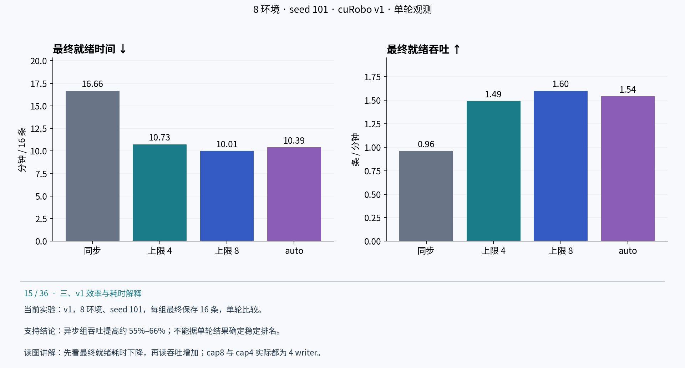
最新对照的时间与吞吐改了什么：把保存从生成主流程中拆出
此前，同步导出占用生成主流程，压缩与 HDF5 写入期间无法继续推进同一流程。异步方案让主进程准备独立所有权的数据帧，经有界共享内存队列交给 CPU writer，生成与保存可以重叠。最后仍要排空队列、合并文件，才能确认数据就绪。
历史记录还包含内存所有权修复：早期异步尝试曾出现 OOM，原因涉及 CPU batch view 保留其他环境的数据；后续改为各环境独立持有 CPU 帧，并在移交时释放已复制帧。该修复与保存池共同组成方案，但现有实验不能单独量化各改动的贡献。
改进机制为什么提速：主流程等待减少，而不是规划器突然更快
最新同步配置的每个已完成 episode 平均执行/等待为 310.27 秒，auto 为 167.22 秒；同步导出均值为 25.61 秒，auto 的主流程入队均值为 2.62 秒。这里的 execution_wait 是执行与调度等待的合计，不能理解为纯 GPU kernel 时间；后台写入也没有凭空消失。
规划阶段均值从同步的 1.74 秒变为 auto 的 1.42 秒，相比执行/等待并非主要耗时。当前证据支持优先优化数据记录、压缩保存和流程重叠，不能把全部收益归因于某个单独函数。
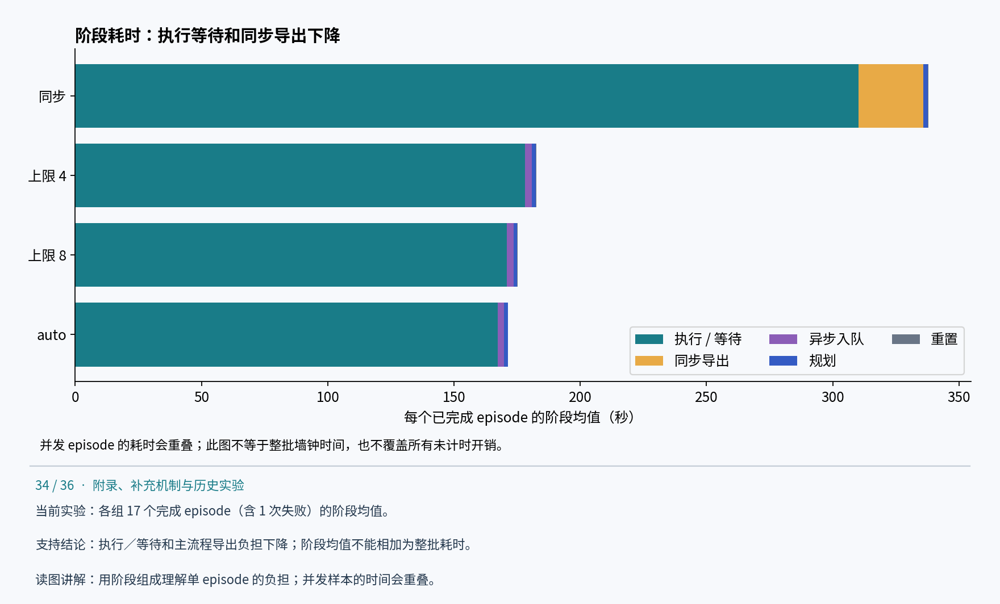
阶段耗时分解统一口径：最终文件可用，才算生产完成
主指标采用 output_ready.elapsed_seconds − 第一个 episode_started.elapsed_seconds，吞吐为成功保存条数 × 60 / 最终就绪秒数。本次已从遥测事件重新计算四个结果，并与 summary.csv 核对一致。launcher 总耗时另列，包含启动和退出，不能混入同一个加速比。
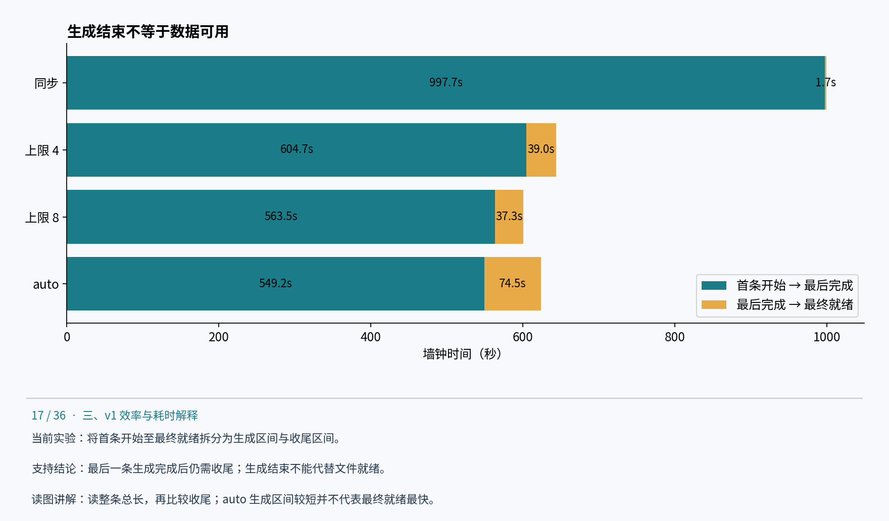
生成与收尾耗时保存尾部的等待与合并会影响最终收益。最新 auto 的 merge 事件耗时约 45.67 秒，上限 4 和上限 8 分别约 8.16、8.50 秒。单轮中这可能受文件系统、缓存和系统状态影响，尚不能认定为 auto 策略本身的固定开销。阶段累计时间和并行 episode 均值不能直接相加为整批墙钟时间。
资源利用率：有所提高，但“GPU 跑满”不是验收条件
首条开始至 output_ready 区间内，按有效设备采样时间加权，GPU 利用率均值为：同步 22.7%，上限 4 为 40.8%，上限 8 为 35.6%，auto 为 32.8%。采样设备为 NVIDIA GeForce RTX 5090。
上限 4 的 GPU 利用率高于上限 8，但本轮完成更慢。这说明利用率只能辅助定位瓶颈，最终应看质量合格数据的就绪吞吐。这里统计的是设备级利用率，可能包含其他进程；只覆盖有效采样间隔，不是逐 kernel 测量，也不是 GPU 独占证明。
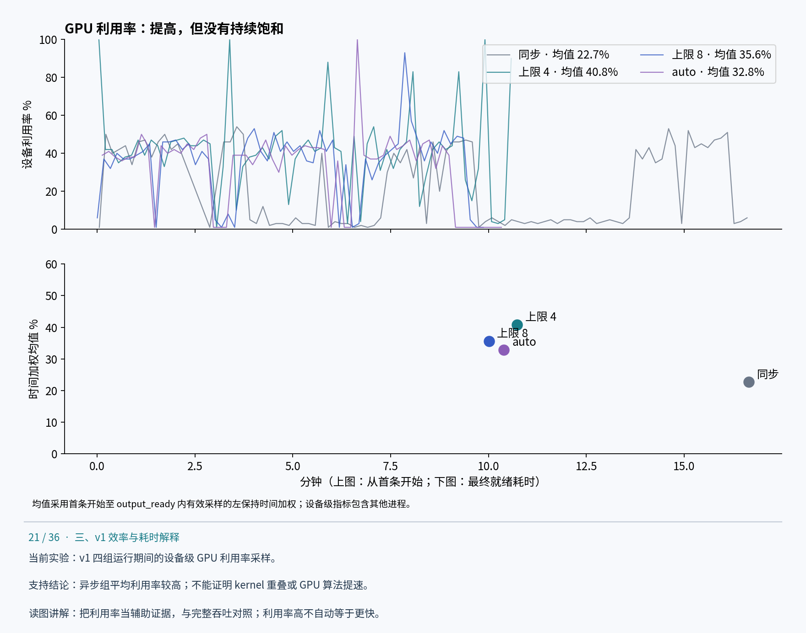
GPU 曲线与时间关系质量效果：本轮指标没有下降，但不代表全面质量认证
四个 v1 配置均完成 17 次尝试，其中 16 次生成成功、1 次失败，生成成功率为 94.12%；保存的 16 条均通过已有末态物理检查。达到目标后取消的在途 episode 不计为失败。本次复核历史校验 JSON，不声称进行了新的物理重放。
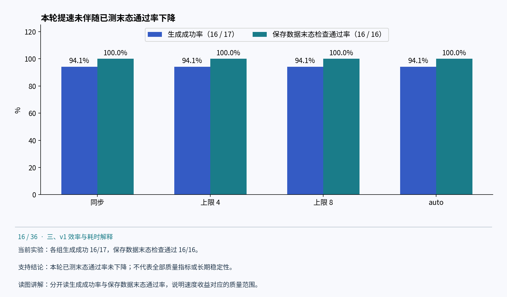
质量对比末态通过、格式兼容与图像有效性是不同维度。历史校验记录中的部分 right_hand_rgb 首尾均值接近零；这不影响现有末态通过统计，但说明训练前仍需独立检查相机有效性、轨迹完整性和多样性。不能将“16/16 末态通过”写成“全部训练质量通过”。
早期测试：收益方向一致，不能拼成连续加速曲线
早期 8 环境、24 条测试中，同步、1 writer、2 writers 的最终就绪时间分别为 1156.74、1022.19、891.22 秒；2 writers 相对同步吞吐提升 29.79%，耗时减少 22.95%。三个模式都记录 24 条成功，但严格末态检查仅 23 条通过，同一个 demo_2 仍在运动。该组不得写成质量完全通过。
离线 4 条保存对照中，同步和 1 writer 的最终就绪分别为 105.13、105.45 秒，2 writers 为 56.66 秒。1 writer 的提交耗时虽降到约 4.58 秒，但完整保存并未变快；这正是不能用“提交返回”代替“最终就绪”的例子。
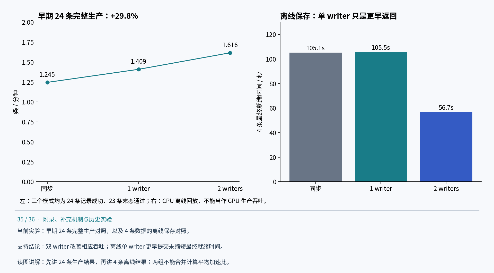
历史测试分组展示24 条与 16 条实验的批量、seed 和实现状态未证明完全一致，因此只在各自组内比较，不把 29.79% 与 66.33% 相乘，也不宣称最新结果代表持续递增的累计收益。
尚未落地的压缩改动与旧 v2 中断记录
离线全长 RGB、相同 chunk 的单轮对照显示：gzip 创建耗时 25.75 秒、文件 0.55 GB；lzf 为 16.98 秒、0.83 GB；无压缩为 10.10 秒、3.72 GB。lzf 有速度收益但增加体积，无压缩的存储代价更大。这些只覆盖离线 RGB 保存，不是完整生成，也不是已经采用新压缩方案后的生产测试。dataset_create 同时包含压缩、HDF5 和 I/O，差值不能作为纯压缩耗时。
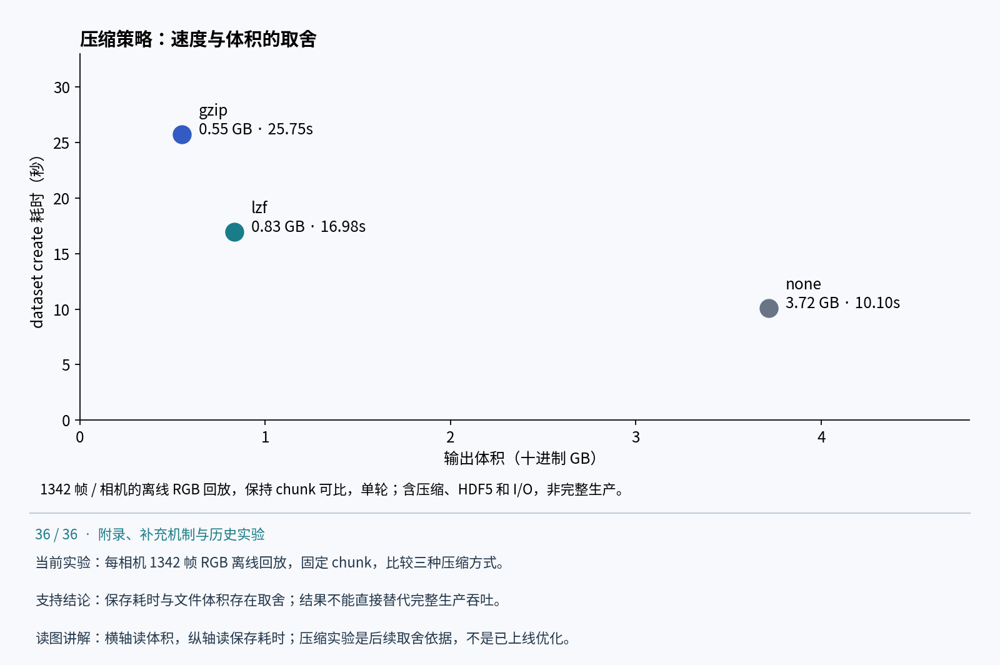
压缩速度与体积取舍10 月 14 日旧 cuRobo v2 的 auto 记录显示 16 次成功、16 个保存分片；但 run 和 export 元数据仍为 running，未找到 output_ready、最终校验文件和完整汇总。这份旧记录只能确认历史阶段进度，不能作为完整交付结果。本版已另行补跑并加入最终结果，不改写旧运行状态。
此前“32 个 episode”测试的 report.md 仍含未填写模板。本次未将其计入完成的基准，也不把 16 条或 24 条结果线性放大为实测 32 条结果。
下一步如何把结论变成稳定生产配置
1. 保留同步基线，重复测试固定 4 writers 与 auto；保持输入、任务、seed 列表、质量判据、8 环境和输出批量一致，并交错测试顺序。报告中位数、分位数和波动，而不只报最好一轮。
2. 优先调查最终合并耗时和队列背压。需要提高并行度时同时记录内存、OOM、磁盘空间、真实 writer 数和其他进程负载。
3. v2 本版已补齐一次最终合并与输出校验，下一步进行同日交错重复 v1/v2；不把求解成功率当作数据生产成功率。
4. 把训练前图像有效性检查补入质量验收，并检查 v2 demo_2 的末态旋转残留。压缩策略若要调整，另做完整生产、读取兼容性与体积对照。
证据与复现
新增 code-evidence.md 提供本轮冻结代码的相关片段及行号；internal-timing.csv 保存新增内部指标和统计口径。
- 主对照：AutoData/datasets/efficiency_20261014_201834/v1/summary.csv，及各 r01_v1_w* 目录中的 run、telemetry、resources、validation 记录。
- 未完成对照：同测试目录下 v2/r01_v2_wauto 的 run、telemetry 与 export 元数据。
- 历史对照及离线实验：outputs/autodata-efficiency-report/v001/evidence.json。
- 数据摘要、可复算数值及输入 SHA-256：本包 data.json；平面汇总为 data.csv。图表可用 python build_figures.py 重建，需要 matplotlib 和 Noto CJK 字体。原始大型遥测与 HDF5 不随包复制。
- 图册：charts.pdf，共 16 页；图像同时提供 PNG 与 SVG。没有基于单轮结果构造置信区间或误差条。
本次仅本地交付，不上传飞书或 ChatGPT，不提交或推送 GitHub。新 v2 实验已运行并完成读回；严格末态校验未全通过，不能标记为质量验收通过。